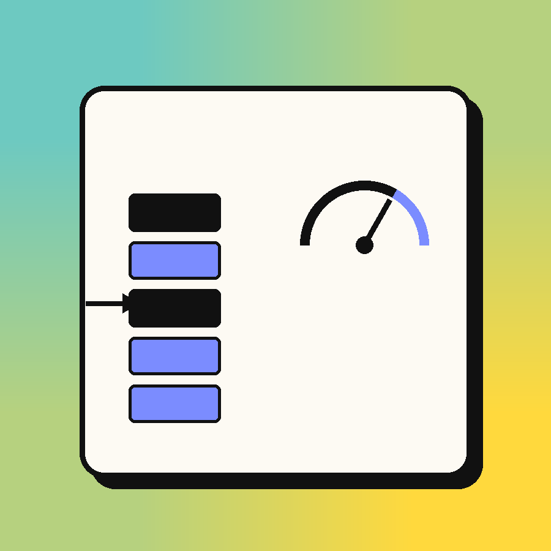

mini-inference-server
A continuous-batching LLM inference server I built from scratch — the serving-engine ideas behind vLLM and TGI, running for real against a small transformer I hand-wrote in NumPy, because I wanted to actually understand what's inside them instead of just calling an API.

I wanted my next project to actually be about AI, not just an app with an API call bolted onto it. When I looked at how vLLM and TGI actually get their throughput, the thing that stuck with me was that almost none of it is about the model itself — it's the scheduling. How do you keep a GPU busy when a hundred people are asking for wildly different amounts of text at wildly different times? That's a systems problem, which is exactly the kind of thing I got hooked on in my operating systems and distributed systems classes, so it felt like the right project to actually sit down and build.
So that's what this is: a real continuous-batching engine — request queue, admission control, a scheduler that packs many in-flight generations into one batched step — running on top of a transformer I wrote myself in plain NumPy so I'd actually understand what the KV-cache underneath it is doing, instead of treating the model as a black box some framework hands me.
Why I hand-wrote the transformer instead of loading a real one.
This was the choice I went back and forth on the most. Using a pretrained model
would've made the demo output readable, but the whole point of the project was
the serving layer, and I didn't want the interesting KV-cache logic to live
inside someone else's library where I couldn't point at it. Writing the forward
pass myself — embeddings, causal self-attention, the cache read/write path — meant
every part the scheduler touches is code I actually understand line by line. The
trade-off is honest: weights are randomly initialized by default, so the output
is gibberish. I decided that was fine, since the thing I was trying to prove was
throughput and correctness, not writing quality — ModelWeights.load()
is right there if I ever want to drop in trained weights later.
The test that mattered most. A KV-cache is only worth anything if
decoding with it gives you the exact same result as recomputing the whole
sequence from scratch. So the first real test I wrote was just that: run a prompt
through prefill(), separately decode the last token using a cache
from the first N-1, and assert the logits match. Extending that to a ragged
batch — two sequences of different lengths, decoded together in one call — is
what actually caught bugs in my padding and masking logic. That test is doing
more work than any other one in the suite.
Ragged batches, not uniform ones. The hard part of continuous batching is that the sequences sharing a decode step almost never have the same length — someone's three tokens in, someone else just joined. I pad each sequence's cached K/V up to the batch's current max length and mask out the padding in the attention scores, so it's still one batched matmul instead of a Python loop per sequence. It's the same technique real batched-decode implementations use before something like PagedAttention avoids the padding waste entirely — a reasonable middle ground for a NumPy/CPU project.
A real scheduling bug I found by testing, not by accident. My
first version of step() admitted waiting requests and then
immediately ran a decode step on the whole batch, including the ones that had
just joined. That meant a brand-new request got two tokens in its first tick
(one from prefill, one from the decode step right after) while everyone else got
one — which quietly breaks the "every sequence advances by one token per tick"
guarantee the whole design rests on. My scheduler tests caught it immediately by
asserting exact token counts after a single step(). The fix was to
decode only the sequences that were already running, and let newly-admitted ones
join the batch starting next tick.
Sync core, async edges. step() is a plain
synchronous method on purpose — it's just NumPy matmuls, nothing to await. But
that choice meant I couldn't use asyncio.Queue for streaming tokens
back to a client the way I first tried: on Python 3.9 it binds to whatever event
loop is running the moment it's constructed, and submit() has no
guarantee one exists yet. I ran into that as a very confusing test failure before
I understood what was happening. The fix ended up simpler than the original
design — RequestHandle just polls the request's growing token list
instead, so nothing about the producer side has to know or care about asyncio at
all.
Proving it actually helps. None of this matters if batching
doesn't measurably beat serving requests one at a time, so bench.py
runs the exact same model and weights both ways. On my machine, 24 concurrent
requests generating 40 tokens each finish about 4x faster batched than
sequential; 64 requests at 50 tokens each gets to roughly 5x. The peak batch size
the benchmark reports is capped below the request count when the cache pool is
smaller than demand — which is the admission control actually doing its job, not
just a number I'm hoping is true.